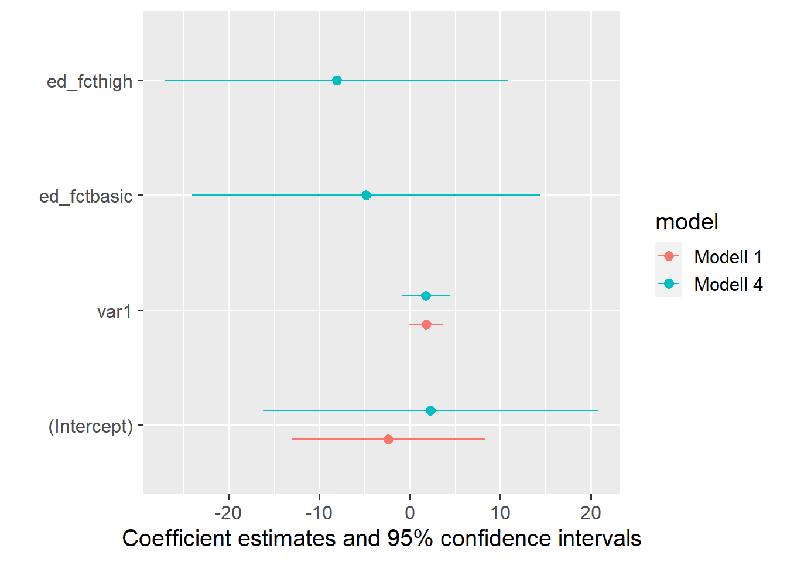
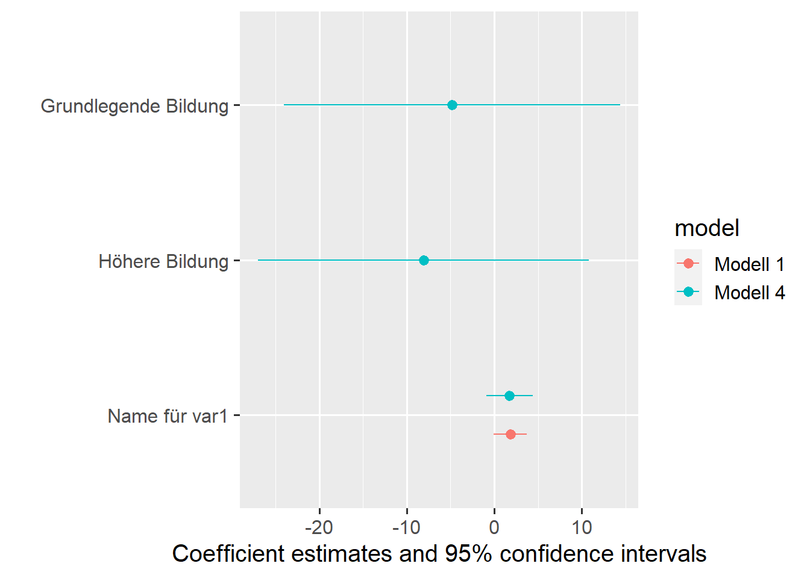
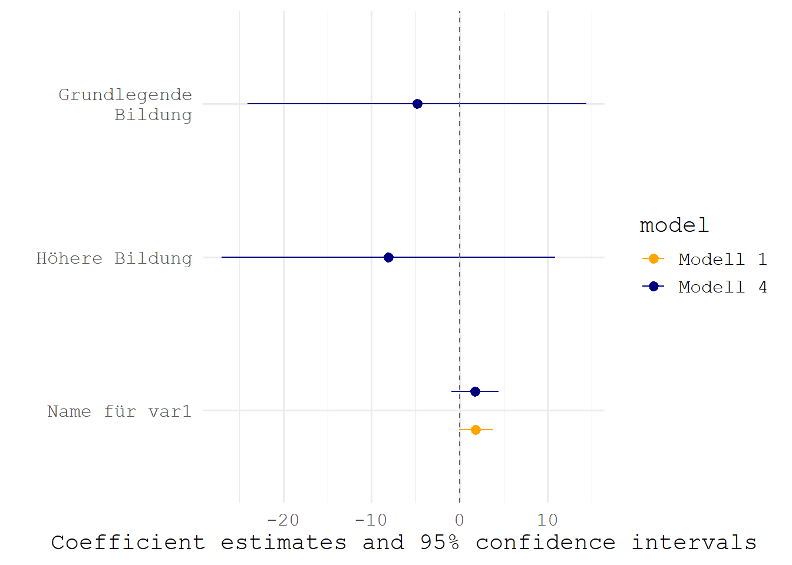
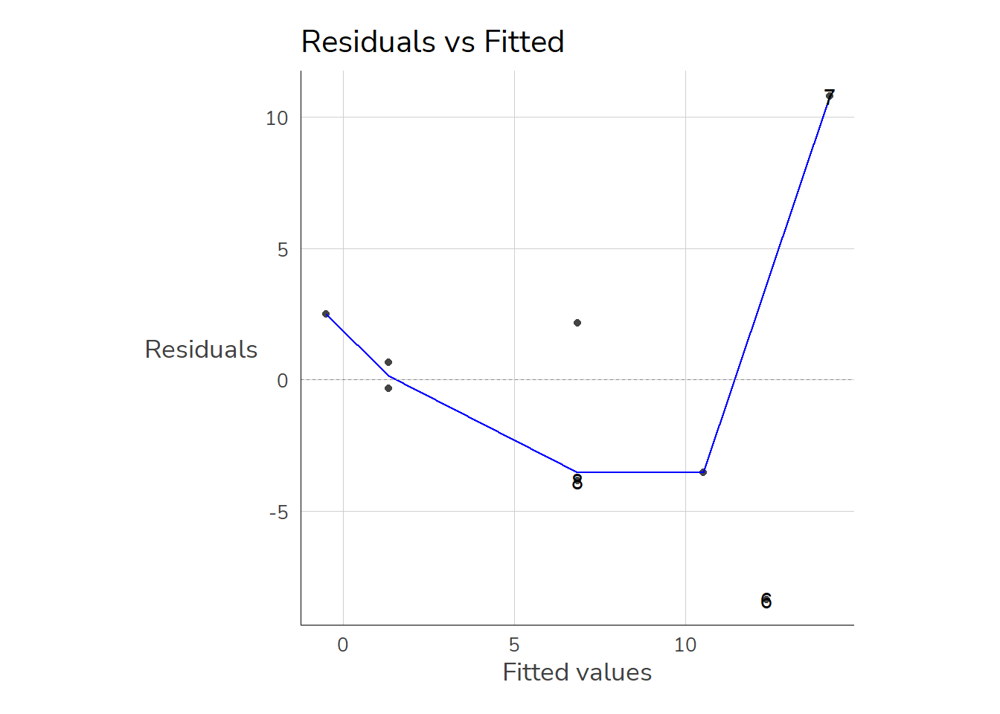

Zum Einstieg betrachten wir zunächst einen (fiktiven) Datensatz mit lediglich fünf Fällen. Mit dem data.frame Befehl können wir einen Datensatz erstellen. Unserer hat zunächst lediglich zwei Variablen: var1 und var2
Regressionsmodelle in R lassen sich mit lm() erstellen. Hier geben wir das Merkmal an, dass auf der y-Achse liegt (die abhängige Variable) und nach einer ~ das Merkmal für die x-Achse (unabhängige Variable). Die Interpretation des Ergebnisses wird uns die kommenden Wochen beschäftigen.
Der Wert unter var1 gibt an, um wieviel sich die Gerade pro “Schritt nach rechts” nach oben/unten verändert. Die Gerade steigt also pro Einheit von var1 um 1.8389662. Die Ergebnisse können wir unter m1 ablegen:
m1 <-lm(var2~ var1, data = dat1)
Mit summary() bekommen wir dann eine Regressionstabelle:
summary(m1)
Call:
lm(formula = var2 ~ var1, data = dat1)
Residuals:
Min 1Q Median 3Q Max
-8.372 -3.613 0.162 2.234 10.789
Coefficients:
Estimate Std. Error t value Pr(>|t|)
(Intercept) -2.3400 4.3454 -0.538 0.6096
var1 1.8390 0.7727 2.380 0.0548 .
---
Signif. codes: 0 '***' 0.001 '**' 0.01 '*' 0.05 '.' 0.1 ' ' 1
Residual standard error: 6.127 on 6 degrees of freedom
Multiple R-squared: 0.4856, Adjusted R-squared: 0.3999
F-statistic: 5.664 on 1 and 6 DF, p-value: 0.05477
m1 enthält alle Informationen zum Modell, besonders hilfreich ist $coefficients:
m1$coefficients
(Intercept) var1
-2.339960 1.838966
summary(m1)$coefficients
Estimate Std. Error t value Pr(>|t|)
(Intercept) -2.339960 4.3453801 -0.5384938 0.60961706
var1 1.838966 0.7727028 2.3799139 0.05477457
Wir können uns die einzelnen Werte mit View(m1) ansehen:
Bspw. finden sich unter fitted.values die vorhergesagten Werte für jeden Fall.
8.2 Regressionsgerade und Daten visualisieren
Mit geom_smooth(method = "lm") können wir Regressionsgeraden auch in {ggplot2} darstellen:
Unser Modell mit var1 und var2 können wir so darstellen:
Hier scheinen wir einen Ausreißer zu haben. In unserem übersichtlichen Datensatz ist der schnell gefunden. In größeren Datensätzen hilft uns geom_text():
Wir können nämlich einzelne geom_ auch nur für ein Subset angeben - dazu vergeben wir data = neu (übernehmen also nicht die Auswahl aus dem Haupt-Befehl ggplot()) und setzen darin einen filter(). Außerdem verschieben wir mit var2+3 das Label etwas über den Punkt.
Wenn wir jetzt das Modell nochmal berechnen wollen, haben wir zwei Möglichkeiten:
8.3.1 Neuen data.frame erstellen
Wir können in R mehrere data.frame-Objekte im Speicher halten. Also können wir leicht einen neuen data.frame erstellen, der nur die Beobachtungen mit var2 < 20 enthält und diesen dann für unseren lm()-Befehl verwenden:
dat1_u20 <- dat1 %>%filter(var2<20)m2a <-lm(var2~ var1, data = dat1_u20)summary(m2a)
Call:
lm(formula = var2 ~ var1, data = dat1_u20)
Residuals:
1 2 3 4 5 6 7
-0.4737 0.1941 -1.4737 4.5230 1.1875 -2.4803 -1.4770
Coefficients:
Estimate Std. Error t value Pr(>|t|)
(Intercept) 1.1382 1.9217 0.592 0.579
var1 0.6678 0.3877 1.722 0.146
Residual standard error: 2.555 on 5 degrees of freedom
Multiple R-squared: 0.3724, Adjusted R-squared: 0.2469
F-statistic: 2.967 on 1 and 5 DF, p-value: 0.1456
8.3.2 Direkt in lm() filtern
Wir können filter()-Befehl auch direkt in das data=-Argument von lm() bauen:
m2b <-lm(var2~ var1, data = dat1 %>%filter(var2<20))summary(m2b)
Call:
lm(formula = var2 ~ var1, data = dat1 %>% filter(var2 < 20))
Residuals:
1 2 3 4 5 6 7
-0.4737 0.1941 -1.4737 4.5230 1.1875 -2.4803 -1.4770
Coefficients:
Estimate Std. Error t value Pr(>|t|)
(Intercept) 1.1382 1.9217 0.592 0.579
var1 0.6678 0.3877 1.722 0.146
Residual standard error: 2.555 on 5 degrees of freedom
Multiple R-squared: 0.3724, Adjusted R-squared: 0.2469
F-statistic: 2.967 on 1 and 5 DF, p-value: 0.1456
8.4 Regressionstabellen
Wenn wir diese verschiedenen Modelle jetzt vergleichen möchten, bietet sich eine Tabelle an.
Es gibt zahlreiche Alternativen zur Erstellung von Regressionstabellen, mein persönlicher Favorit ist modelsummary() aus dem gleichnamigen Paket {modelsummary}. Es kommt mit (nahezu) allen Modellarten zurecht und bietet darüber hinaus eine breite Palette an (u.a. auch Word-Output - dazu später mehr) und auch Koeffizientenplots (auch dazu kommen wir noch). Außerdem ist die Dokumentation hervorragend.
Wir werden uns noch ein bisschen ausführlicher mit den Anpassungsmöglichkeiten für {modelsummary} befassen, hier nur schon mal zwei zentrale Optionen:
mit stars = T können wir uns die Signifikanz mit den gebräuchlichen Sternchen-Codes anzeigen lassen (*: p < .05 usw.)
mit gof_omit = "IC|RM|Log" können wir die Goodness of Fit Statistiken ausblenden die IC, RM oder Log im Namen haben (also AIC, BIC, RMSE und die LogLikelihood)
Natürlich können wir auch kategoriale unabhängige Variablen in unser Modell mit aufnehmen. Dazu müssen wir aber entsprechende Variable als factor definieren - und R so mitteilen, dass die Zahlenwerte nicht numerisch zu interpretieren sind. Wenn wir educ aus unserem kleinen Beispiel betrachten - dann steht 1 für einen grundlegenden Bildungsabschluss, 2 für einen mittleren und 3 für einen hohen Bildungsabschluss.
Um mehrere unabhängige Variablen in unser Regressionsmodellen aufzunehmen, geben wir sie mit + an:
m4 <-lm(var2 ~ ed_fct + var1, dat1)summary(m4)
Call:
lm(formula = var2 ~ ed_fct + var1, data = dat1)
Residuals:
1 2 3 4 5 6 7
4.258 2.758 -4.824 -2.082 -2.758 -4.258 6.907
Coefficients:
Estimate Std. Error t value Pr(>|t|)
(Intercept) 2.3187 5.8227 0.398 0.717
ed_fctbasic -4.8297 6.0381 -0.800 0.482
ed_fcthigh -8.0824 5.9411 -1.360 0.267
var1 1.7527 0.8347 2.100 0.127
Residual standard error: 6.501 on 3 degrees of freedom
(1 Beobachtung als fehlend gelöscht)
Multiple R-squared: 0.7002, Adjusted R-squared: 0.4003
F-statistic: 2.335 on 3 and 3 DF, p-value: 0.2521
8.7 Koeffizientenplots
Neben Regressionstabellen stellt {modelsummary} auch die Funktion modelplot() zur Verfügung, mit denen einfach ein Koeffizientenplot aus einem oder mehreren Modellen erstellt werden kann:
modelplot(m4)
Für einen Modellvergleich geben wir einfach die Modelle in einer named list an, außerdem können wir mit den üblichen {ggplot2}-Befehlen die Grafik weiter anpassen:
modelplot(list("Modell 1"=m1,"Modell 4"=m4))

Mit coef_map können wir Labels für die Koeffizienten vergeben ((Intercept) bekommt keinen Namen und wird daher weggelassen:
modelplot(list("Modell 1"=m1,"Modell 4"=m4),coef_map =c("var1"="Name für var1","ed_fcthigh"="Höhere Bildung","ed_fctbasic"="Grundlegende Bildung" ))

Außerdem können wir mit den üblichen {ggplot2}-Befehlen die Grafik weiter anpassen:
modelplot(list("Modell 1"=m1,"Modell 4"=m4),coef_map =c("var1"="Name für var1","ed_fcthigh"="Höhere Bildung","ed_fctbasic"="Grundlegende\nBildung")) +# \n fügt einen Zeilenumbruch eingeom_vline(aes(xintercept =0), linetype ="dashed", color ="grey40") +# 0-Linie einfügenscale_color_manual(values =c("orange","navy")) +theme_minimal(base_size =15,base_family ="mono")

Mit {broom} können wir auch einen data.frame aus den Regressionsergebnissen erstellen und den ggplot ganz selbst erstellen - siehe Anhang.
Erstellen Sie ein Objekt mod1 mit einem linearen Regressionsmodell (lm) mit netges (Monatsnetto in EUR) als abhängiger und azges1 (Arbeitszeit in Stunden) als unabhängiger Variable! (siehe hier)
Betrachten Sie Ergebnisse mod1 - was können Sie zum Zusammenhang zwischen netges und azges1 erkennen?
Visualisieren Sie Ihr Regressionsmodell mit {ggplot2}.
Sehen Sie Ausreißer im Scatterplot? Markieren Sie diese mit Hilfe der Variable pnr und geom_text().
8.8.2 Übung 2: Nur manche Beobachtungen
Erstellen Sie ein lm()-Modell mod2, welches nur auf den Beobachtungen mit einem Monatseinkommen unter 20.000 EUR beruht.
Erstellen Sie eine Regressionstabelle, welche diese neue Modell mod2 neben das Modell mod1 aus Übung 1 stellt.
8.8.3 Übung 3: kat. UVs
Erstellen Sie ein Regressionsmodell mit de Einkommen der Befragen (netges) als abhängiger und dem Schulabschluss der Befragten schul als unabhängiger Variable:
value
label
-10 bis -1 und 1
t.n.z./k.A.
2
Schule beendet ohne Abschluss
3
Sonder-/Foerderschulabschluss
4
Volks-/Hauptschulabschluss bzw: POS 8./9. Klasse
5
Mittlere Reife/Realschulabschluss bzw. POS 10. Klasse
6
Fachhochschulreife
7
Allgem. oder fachgeb. Hochschulreife (Abitur)/EOS 12. Klasse
Achten Sie darauf, dass schul2 als factor definiert ist. Vergeben Sie für die Levels 2-7 die Labels “ohne”, “Förderschule”,“Hauptschule”,“Mittlere Reife”,“FOS/BOS”,“Abi” und legen sie den factor als Variable schul2_fct in Ihrem data.frame ab - siehe Code-Hilfe unten:
Erstellen Sie das Regressionsmodell mit dieser neuen factor-Variable für schul2_fct als unabhängiger Variablen.
Ändern Sie die Referenzkategorie auf die Ausprägung Mittlere Reife (schul2 = 5) und schätzen Sie das Modell erneut.
8.8.4 Übung 4: mehrere UVs & Koeffizientenplot
Passen Sie das lm()-Modell mod1 (mit allen Fällen aus pend_u08) so an, dass neben der Arbeitszeit zusätzlich den Schulabschluss (schul2) als unabhängige Variable mit aufgenommen werden.
Erstellen Sie auch eine grafische Gegenüberstellung der beiden Modelle mit und ohne den Schulabschluss
8.9 Anhang
dat1 <- dat1 %>%select(-matches("compl"))
8.9.1 Vorhergesagte Werte
Die vorhergesagten Werte von lm() finden sich unter $fitted.values:
Diese vorhergesagten Werte entsprechen einfach der Summe aus dem Wert unter Intercept und dem Wert unter var1 multipliziert mit dem jeweiligen Wert für var1.
Für die erste Zeile aus dat1 ergibt sich also m1 folgender vorhergesagter Wert: 2.1351+0.5811*1=2.7162
Die Werte unter fitted.values folgen der Reihenfolge im Datensatz, sodass wir sie einfach als neue Spalte in dat1 ablegen können:
dat1$lm_vorhersagen <- m1$fitted.valuesdat1
id var1 var2 educ gend x ed_fct lm_vorhersagen
1 1 2 2 3 2 2 high 1.337972
2 2 1 2 1 1 1 basic -0.500994
3 3 2 1 2 1 2 medium 1.337972
4 4 5 9 2 2 4 medium 6.854871
5 5 7 7 1 1 1 basic 10.532803
6 6 8 4 3 2 NA high 12.371769
7 7 9 25 2 1 NA medium 14.210736
8 8 5 3 -1 2 NA <NA> 6.854871
Die Grafik zeigt wie Vorhersagen auf Basis von m1 aussehen: Sie entsprechen den Werten auf der blauen Geraden (der sog. Regressionsgeraden) an den jeweiligen Stellen für var1.
Code
ggplot(dat1, aes(x = var1, y = var2)) +geom_point(size =3) +geom_smooth(method ="lm", color ="darkblue" , se =FALSE,size =.65) +geom_point(aes(x = var1, y = lm_vorhersagen), color ="dodgerblue3", size =3) +expand_limits(x =c(0,8),y=c(0,8))
8.9.2 Residuen
Die hellblauen Punkte (also die Vorhersagen von m1) liegen in der Nähe der tatsächlichen Punkte. Trotzdem sind auch die hellblauen Punkte nicht deckungsgleich mit den tatsächlichen Werten. Diese Abweichungen zwischen den vorhergesagten und tatsächlichen Werten werden als Residuen bezeichnet: \[Residuum = beobachteter\, Wert \; - \; vorhergesagter\,Wert\]\[\varepsilon_{\text{i}} = \text{y}_{i} - \hat{y}_{i}\] Wir können diese per Hand berechnen als Differenz zwischen dem tatsächlichen und dem vorhergesagten Wert oder einfach unter m1$residuals aufrufen:
Überprüfen lässt sich die NV-Annahme mit dem Shapiro-Wilk-Test & shapiro.test(). Dieser testet die \(H_0\): “Die Residuen sind normalverteilt” gegen die \(H_A\): “Die Residuen weichen signifikant von der Normalverteilung ab”
shapiro.test(m1$residuals)
Shapiro-Wilk normality test
data: m1$residuals
W = 0.95346, p-value = 0.746
8.9.5 Test auf Homoskedastizität
Homoskedastizität ist gegeben, wenn die vorhergesagten Werte über den kompletten Wertebereich (ungefähr) gleich weit von den tatsächlichen Werten (m1\$fitted.values) entfernt sind. Auch hier gibt es eine graphische Überprüfungsmethode sowie einen Test. Zur graphischen Überprüfung werden die vorhergesagten Werten und die Residuen als Scatterplot dargestellt. Auch hier hilft uns autoplot():
autoplot(m1, which =1)

Der dazugehörige Test ist der Breusch-Pagan-Test. Dieser testet die \(H_0\) “Homoskedastizität” gegen die \(H_A\) “Heteroskedastizität”, der p-Wert gibt also an mit welcher Irrtumswahrscheinlichkeit wir die Homoskedastizitäts-Annahme verwerfen müssen. In R können wir dafür bptest aus dem Paket lmtest verwenden:
install.packages("lmtest")
library(lmtest)bptest(m3)
studentized Breusch-Pagan test
data: m3
BP = 3.6069, df = 2, p-value = 0.1647
Ein verbreiteter Schwellenwert des VIF beträgt 10,00. Werte des VIF über 10 deuten auf ein schwerwiegendes Multikollinearitätsproblem, oftmals werden Gegenmaßnahmen schon ab einem strikteren Grenzwert von ca. 5,00 empfohlen. Im konkreten Beispiel ist für alle UVs also nach beiden Grenzwerten alles in Ordnung.
Beim Vorliegen von Mulitkollinearität gibt es mehrere Möglichkeiten, das zu beheben: Wir können eine oder mehrere unabh. Variablen aus dem Modell ausschließen. Das ist letztlich eine inhaltliche Frage und kann nicht mit einem Standardrezept gelöst werden. Alternativ können wir die kollinearen unabh. Variablen zu Indexvariablen zusammenfassen. Wir würden also einen gemeinsamen Index, bspw. der Mittelwert über die jeweiligen unabh. Variablen, erstellen.
8.9.7 Regressionsmodelle vergleichen
Mit dem Paket {performance} können wir auch einen umfassenden Modellvergleich bekommen:
Warning: When comparing models, please note that probably not all models were fit
from same data.
# Comparison of Model Performance Indices
Name | Model | R2 | R2 (adj.)
--------------------------------
m1 | lm | 0.486 | 0.400
m4 | lm | 0.700 | 0.400
8.9.8 Individuelle Koeffizientenplots mit {broom}
modelplot() bietet eine schnelle Art, Koeffizientenplots zu erstellen, allerdings verwende ich häufig {broom}. Mit broom::tidy(..., conf.int = TRUE) bekommen wir einen data.frame mit den Ergebnissen des Regressionsmodells, die wir bspw. in einem {ggplot2} weiterverarbeiten können - wenn uns die Standardlösung von modelplot() nicht weiterhilft/gefällt:
library(broom) ## schon geladen als Teil des tidyversetidy(m3, conf.int =TRUE)